2127E electric speed selection system
- Path
- Descriptions > 21 GEARBOX > 2127 ELECTRO-HYDRAULIC SELECTION. GEARBOX EXTERNAL. CONTROLS > 2127E electric speed selection system
- Kind
- system description
- Applies to
- engines: 2.0 JTS, 3.2 V6, 2.0 JTS; all production periods
- Interactive page
- https://sloeber94.github.io/elrnDB-a156/en/#/3232904
Applies to: engines: 2.0 JTS, 2.0 JTS; all production periods; only with equipment: Smart gearbox
ELECTRONIC CONTROL UNIT
It is fitted in the passenger compartment beneath the passenger side facia.
The control unit communicates with the injection control unit through a CAN line and is fitted with a tester line.
Pin out
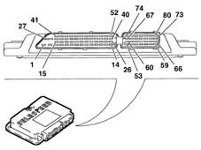
1, Earth 2, Earth 3, EV4 solenoid controlling gear selection actuator + from 4 to 25, Not connected 26, Gear selection bit 0 27, Power source (+30) 28, ignition-operated power source 29, Solenoid EV3 controlling selection actuator 30, Not connected 31, pump relay control 32, Solenoid EV1 controlling engagement actuator 33, CAN line - 34, Not connected 35, Not connected 36, Car speed 37, Not connected 38, Gearbox input rpm sensor + 39, Gear engagement position sensor 40, Pressure sensor 41, Not connected 42, Ignition relay control 43, Solenoid EV0 controlling clutch actuator + 44, Solenoid EV2 controlling gear engagement actuator + 44, Solenoid EV2 controlling gear engagement actuator + 45. + CAN line 46, Not connected 47, Not connected 48, Engine rpm 49, Tester line K 50, gear input rpm sensor - 51, gear selection position sensor 52, clutch position sensor from 53 to 66, Not connected 67, speed selection bit 1 68, speed selection bit 3 69, brake pedal switch 70, Not connected 71, Not connected 72, Display data control output 73, Gear engagement position sensor power source 74, Speed selection bit 2 75, Speed selection bit 4 76, Ignition signal 77, Auto switch 78, Door button 79, Clutch position sensor power source 80, Buzzer output control
GEAR INPUT SHAFT SPEED SENSOR
Electromagnetic, fitted to the gearbox bell housing.
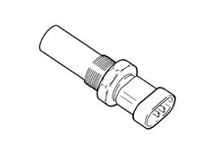
OIL PRESSURE SENSOR
Active type, fitted to the hydraulic unit.
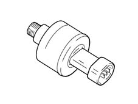
Diagram
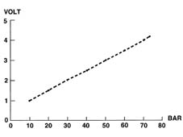
ACTUATOR POSITION SENSORS
The sensors (potentiometers) that send the gearbox electronic control unit the position of the three actuators (speed selection, speed engagement and clutch control) are fitted to the hydraulic unit.
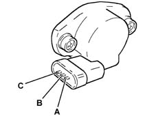
A, Earth B, Power source C, Signal
BRAKE PEDAL SWITCH
This is fitted to the pedal unit and closed when the pedal is pressed to cause the STOP lights to come on and a signal to be sent to the gearbox electronic control unit
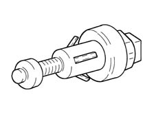
DOOR OPEN SWITCH
Detects when driver side door is open via an on-off switch that earths the circuit and informs the control unit that this has occurred.
BUZZER
This is built into the control panel and notifies the driver of:
- a fault in the system;
- improper use (e.g. clutch overheating);
- car safety (e.g. ignition turned off with car in neutral).
For further information, see "Operating Strategies".
Applies to: engines: 3.2 V6; all production periods; only with equipment: Smart gearbox
COMPONENT DESCRIPTION
ELECTRONIC CONTROL UNIT
It is fitted in the passenger compartment under the dashboard on the passenger side.
The control unit communicates with the engine control unit through a CAN line and is fitted with a tester line.
PIN OUT
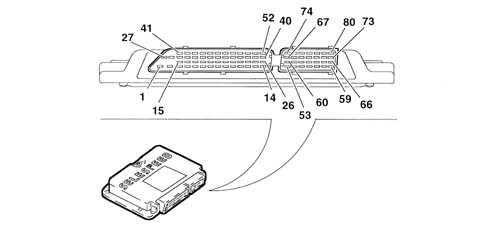
1 Earth 2 Earth 3 EV4 gear + selection actuator solenoid 4 Not connected. 5. Not connected. 6. Not connected. 7. Not connected. 8. Not connected. 9. Not connected. 10. Not connected. 11. Not connected. 12. Not connected. 13. Not connected. 14. Not connected. 15. Not connected. 16. Not connected. 17. Not connected. 18. Not connected. 19. Not connected. 20. Not connected. 21. Not connected. 22. Not connected. 23. Not connected. 24. Not connected. 25. Not connected. 26. Gear selection bit 0 27. Supply (+30) 28. Supply controlled by the ignition 29. Solenoid EV3 controlling selection actuator 30. Not connected. 31. Pump relay control 32. Engagement actuator control solenoid EV1 33. CAN line 34. Not connected. 35. Not connected. 36. Vehicle speed 37. Not connected. 38. gear + input rpm sensor 39. Gear engagement position sensor 40. Pressure sensor 41. Not connected. 42. Start-up relay control 43. Solenoid EV0 controlling clutch actuator + 44. Solenoid EV2 controlling gear engagement actuator + 45. + CAN line 46. Not connected. 47. Not connected. 48. Engine rpm 49. Diagnostic line K 50. Gear - input rpm sensor 51. Gear selection postion sensor 52. Clutch position sensor 53. Not connected. 54. Not connected. 55. Not connected. 56. Not connected. 57. Not connected. 58. Not connected. 59. Not connected. 60. Not connected. 61. Not connected. 62. Not connected. 63. Not connected. 64. Not connected. 65. Not connected. 66. Not connected. 67. Speed selection bit 1 68. Speed selection bit 3 69. Brake pedal switch 70. Not connected. 71. Not connected. 72. Display data control output 73. Gear engagement position sensor power source 74. Speed selection bit 2 75. Speed selection bit 4 76. Ignition signal 77. Auto switch 78. Door button 79. Clutch position sensor power source 80. Buzzer output control
GEARBOX INPUT SHAFT SPEED SENSOR
Electromagnetic, fitted to the gearbox bell housing.
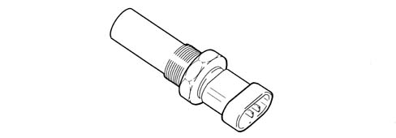
OIL PRESSURE SENSOR
Active type and fitted to the hydraulic actuation unit.
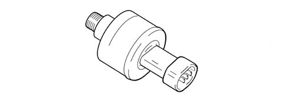
DIAGRAM
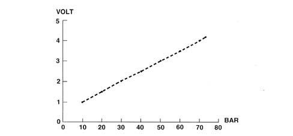
ACTUATOR POSITION SENSORS
The sensors (potentiometers) that send the gearbox electronic control unit the position of the two actuators (speed selection and speed engagement) are fitted to the hydraulic actuation unit.
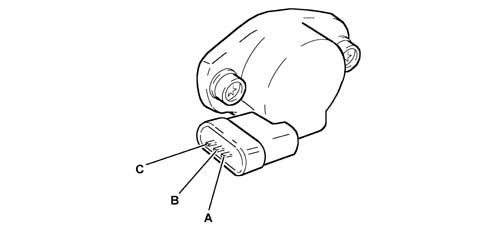
A. Earth B. Power supply C. Signal
CLUTCH POSITION SENSOR
This is fitted on the clutch control actuator and informs the electric control unit of the position of the clutch control actuator.
BRAKE PEDAL SWITCH
This is fitted to the pedal unit and closed when the pedal is pressed to cause the STOP lights to come on and a signal to be sent to the gearbox electronic control unit
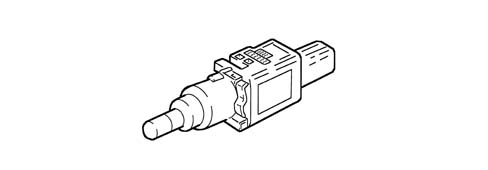
DOOR OPEN SWITCH
Detects when driver side door is open via an on-off switch that earths the circuit and informs the Selespeed control unit that this has occurred.
BUZZER
This is built into the control panel and notifies the driver of:
- a fault in the system;
- improper use (e.g. clutch overheating);
- car safety (e.g. ignition turned off with car in neutral).